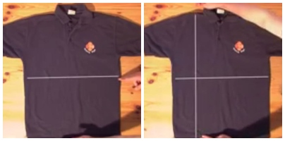

Cara Melipat Kaos atau Kemeja dengan Cepat Hanya 2 detik

1. Langkah pertama yang harus dilakukan yaitu tentunya menyiapkan kaos ataupun kemeja yang hendak anda lipat. Kemudian, buka kaos atau kemeja anda di atas meja ataupun permukaan lainnya dengan baju bagian depan berada di atas. Setelah itu, anda tentukan tiga titik pada kaos atau kemeja yang hendak anda lipat. Cara menentukan titik yang pertama yaitu, buat garis ilustrasi dengan posisi horizontal tepat di tengah-tengah baju anda. Selanjutnya, buat kembali garis ilustrasi dengan posisi vertikal dibagian sisi sebelah kanan.

2. Setelah itu, tentukan titik temu antara garis horizontal dan vertikal seperti halnya titik A pada gambar. Lalu, tentukan titik akhir atau titik ujung sebelah atas garis vertikal dimana titik tersebut tepat pada bahu seperti titik B pada gambar. Dan tentukan kembali titik ujung sebelah bawah pada garis vertikal, seperti titik C pada gambar.

3. Kemudian, jepit titik temu antara garis horizontal dan vertikal atau titik A dengan menggunakan telunjuk dan ibu jari tangan sebelah kiri. Lalu, jepit kembali titik ujung atas garis vertikal atau titik B dengan menggunakan telunjuk dan ibu jari tangan sebelah kanan.

4. Lalu, satukan atau temukan titik ujung atas garis vertikal atau titik B dengan titik ujung bawah garis vertikal atau titik C dengan menarik tangan kanan yang menjepit titik B ke titik C, lalu jepit baju pada titik C dengan menggunakan ibu jari dan telunjuk tangan kanan bersamaan baju pada titik B.

5. Langkah yang terakhir yaitu, tangan yang menjepit masing-masing titik A dan titik B,C tarik ke atas hingga baju dalam keadaan setengah terlipat. Lalu simpan baju dengan keadaan terbalik dimana bagian depan berada di bawah. Setelah itu, sempurnakan lipatan baju dengan melipat baju ke arah luar atau menyatukannya dengan bagian baju yang belum terlipat.
SELAMAT MENCOBA (∩_∩)